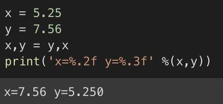

sentence = 'She said, "That is a great tasting apple!"'
sentence = "That's a great tasting apple!"
double = "She said, \"That's a great tasting apple!\""
sentence = 'She said, "That\'s a great tasting apple!"'
Variables
(Variable) คือ ตัวแปร ที่ผู้เขียนโปรแกรมประกาศขึ้น สำหรับใช้เก็บข้อมูลที่ต้องการ เพื่อนำไปใช้ในการเขียนโปรแกรม เพื่อทำการประมวลผลข้อมูล เก็บข้อมูลในหน่วยความจำขณะที่ โปรแกรมทำงาน เช่น constant และ VAT เป็นต้น
Valid Variable Names (ชื่อตัวแปรที่ถูกต้อง)
-ชื่อตัวแปรประกอบด้วยตัวอักษร ตัวเลข หรือเครื่องหมายขีดเส้นใต้ _ ตัวอังกฤษใหญ่ไม่เหมือนตัวเล็ก ห้ามขึ้นต้นชื่อด้วยตัวเลข-อย่าตั้งชื่อตัวแปรซ้ำกับชื่อฟังก์ชันใน Python เช่น int, str, max, sum, abs, ...
Reserved word
-ห้ามใช้คำสงวนเป็นชื่อตัวแปร| and | except | lambda |
| as | finally | nonlocal |
| assert | FALSE | None |
| break | for | not |
| class | from | or |
| continue | global | pass |
| def | if | raise |
| del | import | return |
| elif | in | TRUE |
| else | is | try |
| with | while | yield |
Data type
Data types (ชนิดข้อมูล)
Basic Data Types :1. Numeric :
1.1 Integer
1.2 Floating point
2. Boolean
3. String
2 Composite Data Types :
1. List
2. Tuple
3. Dictionary
4. Set
Numbers
-เลขจำนวนเต็ม (Integers)

-ตัวเลขทศนิยม หรือจำนวนจริง (Float)

Boolean
ใช้คำย่อในการเขียนโปรแกรมคือ bool เป็นชนิดของตัวแปรที่สามารถเก็บค่า
ลอจิก จริง (True) หรือ เท็จ (False)

String
Operators
ตัวดำเนินการ (Operator) คือ สัญลักษณ์ที่ใช้ในการแทนการกระทำอย่างใดอย่างหนึ่งกับข้อมูล เช่น +, -, *, **, /, //, %, =, >, <, !=, ==, <> เป็นต้น
Operators Precedence

Example
Input
คือการรับค่าข้อมูลจากแป้นพิมพ์
-การรับค่าข้อมูลที่เป็นสตริง หรืออ๊อปเจ็กต์
-การรับค่าข้อมูลที่เป็นตัวเลข หรือจำนวนจริง
a,b,c = [e for e in input().split()] หรือ a,b,c = input().split() อ่านสตริง 3 ตัว
x,y = [int(e) for e in input().split()] อ่านจำนวนเต็ม 2 จำนวน
a,b,c = [float(e) for e in input().split()] อ่านจำนวนจริง 3 จำนวน
-หากจะอ่านจำนวนจริงตามด้วยจำนวนเต็ม ก็อ่านเป็นสตริงก่อน โดยใช้คำสั่ง f,n = input().split() แล้วจึงค่อยแปลงเป็นจำนวนจริงกับจำนวนเต็ม โดยใช้คำสั่ง f = float(f); n = int(n)
x,y = [int(e) for e in input().split()] อ่านจำนวนเต็ม 2 จำนวน
a,b,c = [float(e) for e in input().split()] อ่านจำนวนจริง 3 จำนวน
-หากจะอ่านจำนวนจริงตามด้วยจำนวนเต็ม ก็อ่านเป็นสตริงก่อน โดยใช้คำสั่ง f,n = input().split() แล้วจึงค่อยแปลงเป็นจำนวนจริงกับจำนวนเต็ม โดยใช้คำสั่ง f = float(f); n = int(n)
Comments
สัญลักษณ์คอมเม้นต์ข้อความในภาษาไพธอน คือ เครื่องหมาย # โดยหากเครื่องหมายนี้อยู่หน้าบรรทัดใด ขณะรันโปรแกรมไพธอนก็จะไม่นำบรรทัดนั้นมารัน